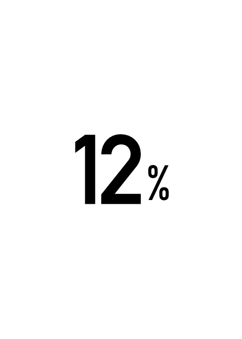

The European Research Council (ERC) is a central funding agency for European scientists.
Hundreds of researchers at different career stages apply each year for Starting, Consolidator, or Advanced Grants.
Only a small proportion are successful.

… and there are LARGE differences in success rates across countries…
Scientists in Portugal have a success rate of about 8%…
… while for scientists in Switzerland or Germany the success rates are over 15%.
These differences seem related to structural investment in science…
Portugal invested on average X% of its GDP on R&D in the last decade.
in comparison, Switzerland and Germany invested on average 2% and 3% on R&D, respectively.
there is overall a link between investment in R&D and the ERC success rates.
Conclusion: Countries that invest in science also are more likely to reap its benefits - it will likely take more than mentoring to fix inequalities in science performance